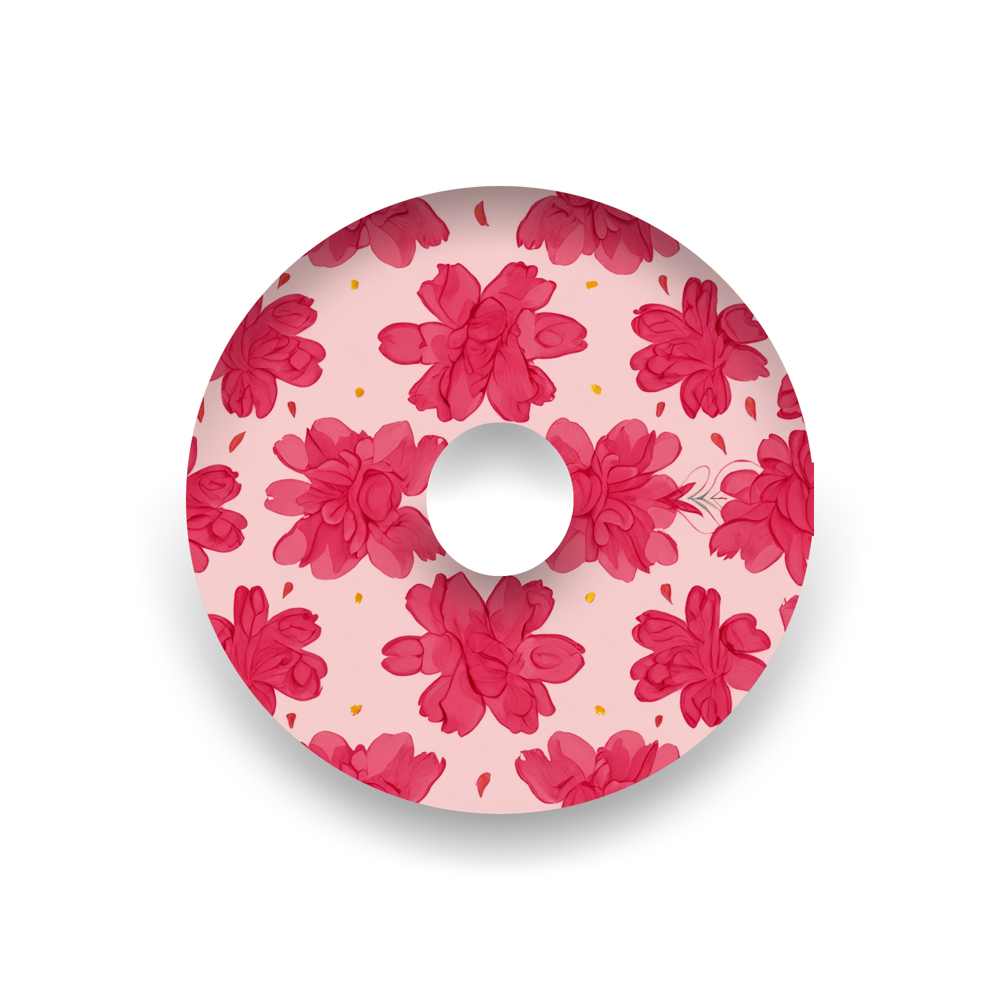
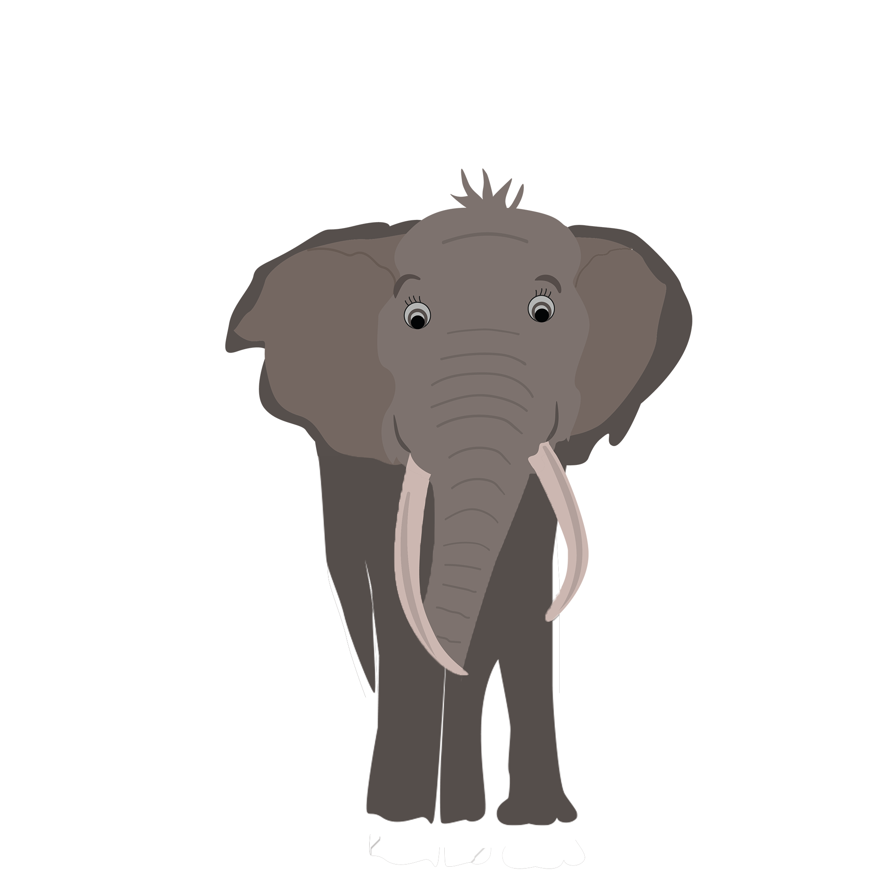

Um den Donut nach links oder rechts zu drehen, drücken Sie bitte den jeweilligen Button.
Mit Druck auf der Taste A/a dreht sich der Donut kontinuierlich nach links. Bei erneutem Druck auf Taste A stoppt die Drehung.

Aktuelle Position in Grad:
0°
Der schwingende Elefant
Zum Abschluss ist hier noch ein kleiner Elefant, der automatisch seinen Rüssel bewegt.
